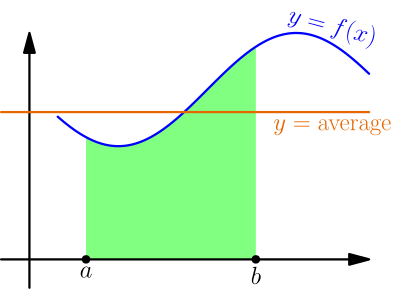

Average¶
Let's calculate the average of 5 numbers $a,b,c,d,e$. Their average is a number $A$ such that $$ A+A+A+A+A = a+b+c+d+e, $$ that is, the sum of all numbers doesn't change if you replace all numbers with the average. This leads to $$ 5A = a+b+c+d+e, $$ and from here we get $$ A = \frac{a+b+c+d+e}{5}. $$ The average of $n$ numbers for any integer $n \ge 2$ works the same way.
Let's do the same with integrals. Suppose that a function $f$ is integrable on $[a,b]$. The average of $f$ is a number $A$ such that $$ \int_a^b f(x)\ dx = \int_a^b A\ dx. $$ In other words, replacing $f(x)$ with the average $A$ doesn't change the integral. In a graph, this means that the area under $y=f(x)$ is same as area under the vertical line $y=A$.

Earlier we have calculated an integral of just a number, and with similar steps, we get $$ \int_a^b A\ dx = (b-a)A. $$ Now we can solve $A$ and we get $$ A = \frac{\int_a^b A\ dx}{b-a} = \frac{\int_a^b f(x)\ dx}{b-a}. $$
Suppose that $f$ is integrable on $[a,b]$. The number $$ \frac{\int_a^b f(x)\ dx}{b-a} $$ is called the integral average (or just average) of $f$ on $[a,b]$.
What happens if you accidentally swap $a$ and $b$?¶
If we write $a$ and $b$ the other way in the above formula, we get $$ \frac{\int_b^a f(x)\ dx}{a-b}. $$ Because we're assuming that $a < b$, the integral on top is now "backwards" (TODO), and we get $$ \begin{align*} \frac{\int_b^a f(x)\ dx}{a-b} &= \frac{-\int_a^b f(x)\ dx}{-b+a} \\ &= \frac{-\int_a^b f(x)\ dx}{-(b-a)} \\ &= \frac{\int_a^b f(x)\ dx}{b-a}. \end{align*} $$
Swapping $a$ and $b$ does not change the integral average.
This means that if you want to calculate the average of $f$ between two numbers, you don't need to care about which number is bigger and which is smaller.
Average vs min and max¶
Let's choose a partition of $[a,b]$ with just two numbers, $a$ and $b$. Then $$ \text{upper sum} = (b-a)\max_{[a,b]} f, $$ where $\displaystyle\max_{[a,b]} f$ denotes the maximum value of $f$ on $[a,b]$, and similarly $$ \text{lower sum} = (b-a)\min_{[a,b]} f. $$ The integral is between all upper sums and lower sums, so $$ (b-a)\min_{[a,b]} f \le \int_a^b f(x)\ dx \le (b-a)\max_{[a,b]} f. $$ Dividing everything by $b-a$ gives $$ \min_{[a,b]} f \le \frac{\int_a^b f(x)\ dx}{b-a} \le \max_{[a,b]} f. $$
If $f$ is integrable on $[a,b]$, then the average of $f$ is between the minimum and maximum values of $f$ on $[a,b]$.